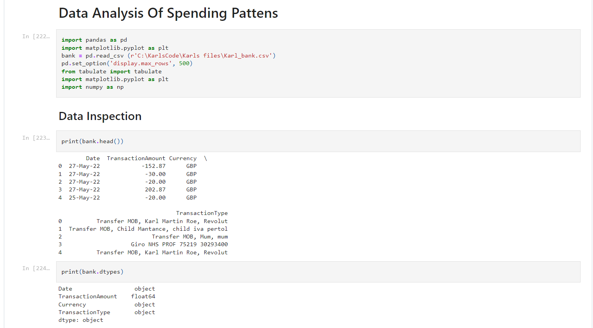
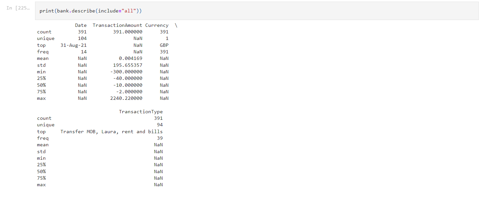
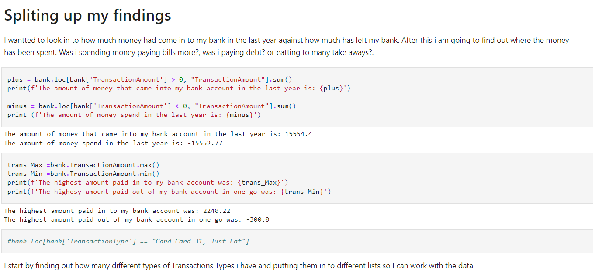
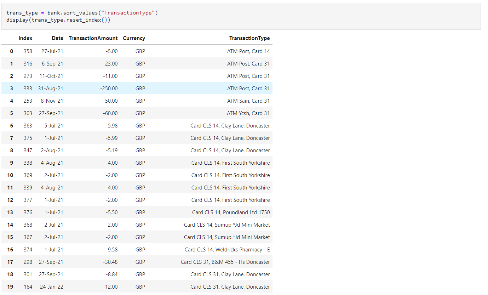
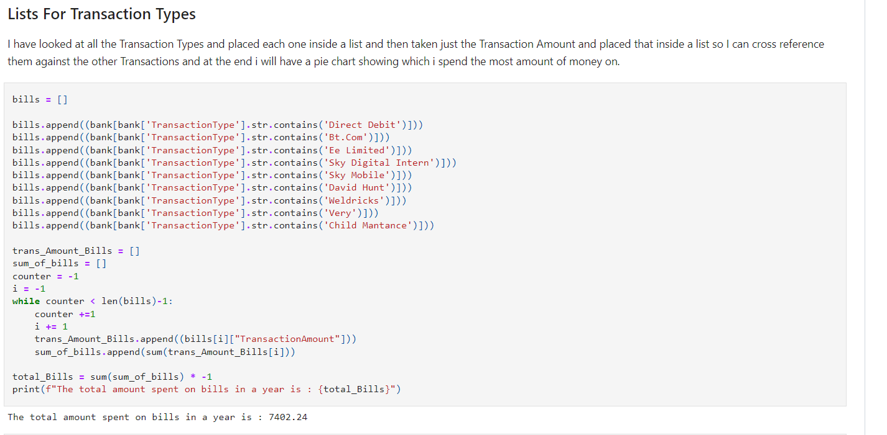
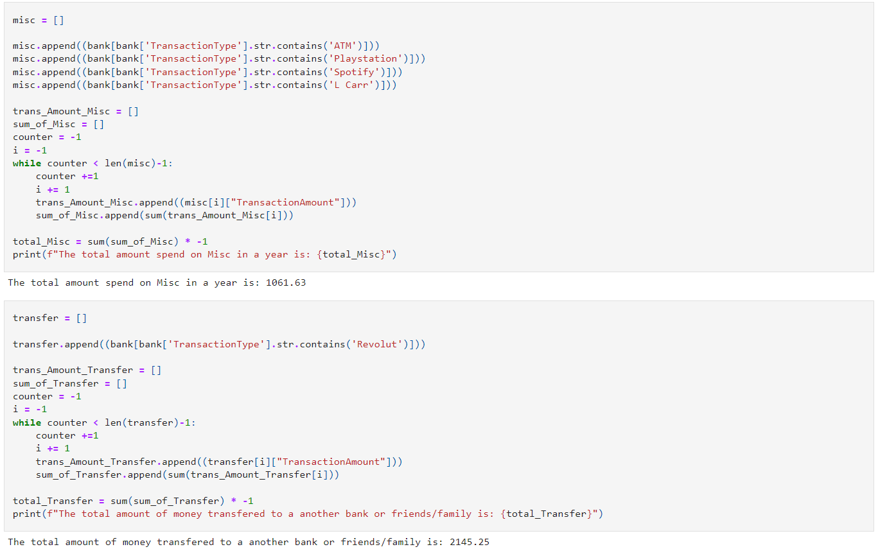
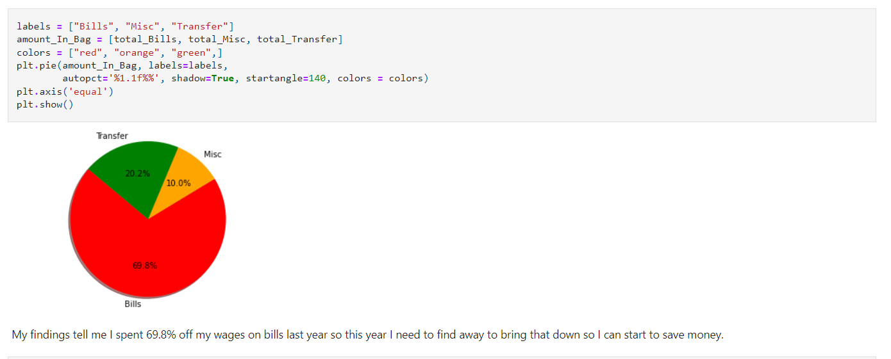

This project I did using python I used what i had learnt during the Data Scientist course and had a look at my bank statment using a csv file and decided to find out where
all my money had been spent. I really enjoyed this project as i got to show off my skills I had learnt while also impressing my self in how much i had learnt.






